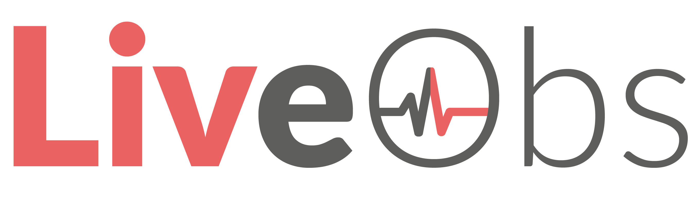
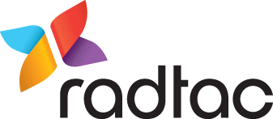

---
layout: partners
---		
		<!-- Main -->
			<article id="main">

					<section class="wrapper style1 container special">
						<div class="row">
							<div class="12u">
							
								<section>
									<span class="icon featured fa-users"></span>
									<header>
										<h3>Assure Delivery Through Partnership.</h3>
									</header>
									<p>Healthcare organisations can be confident of a successful implementation programme delivering real clinical benefits with support from Enterprise service providers.
									<br /><br />
									The Apperta Foundation, supported by NHS England, works with these partners to facilitate the adoption of open-eObs throughout the NHS.</p>
								</section>
							
							</div>
						</div>

					</section>

				<!-- Two -->
					<section class="wrapper style3 container special">
					
						<header class="major">
						</header>
						
						<div class="row">
							<div class="12u">
							
								<section>

									<a href="http://www.liveobs.com/" class="image featured"></a>
									<header>
										<h3>Liveobs - the BJSS-supported Enterprise edition of open-eObs.</h3>
									</header>

									<a href="http://www.bjss.com/">BJSS</a> is the Award-Winning, Delivery-Focused IT Consultancy that engineered and delivered NHS Spine 2 and the NHS E-Referral Service. With over 20 years’ software delivery and IT advisory experience, we are renowned for technical excellence, cost-effective delivery and our proven BJSS Enterprise Agile approach.</p>
								</section>

							</div>
						</div>
					</section>

<!-- 					<section class="wrapper style3 container special">
						<div class="row">
							<div class="12u">
							
								<section>
									
									<p>Radtac are the consultancy supporting SHIP (Southampton, Hampshire, Isle of Wight and Portsmouth) is four Primary Care Trusts (PCTs) who are implementing world class commissioning of NHS services and evolving to interact with service suppliers highly collaboratively via Category Management. SHIP is implementing an integrated Agile framework, to ensure optimum delivery of high quality products. T
								</section>

							</div>
						</div>
					
					</section> -->
				
			</article>